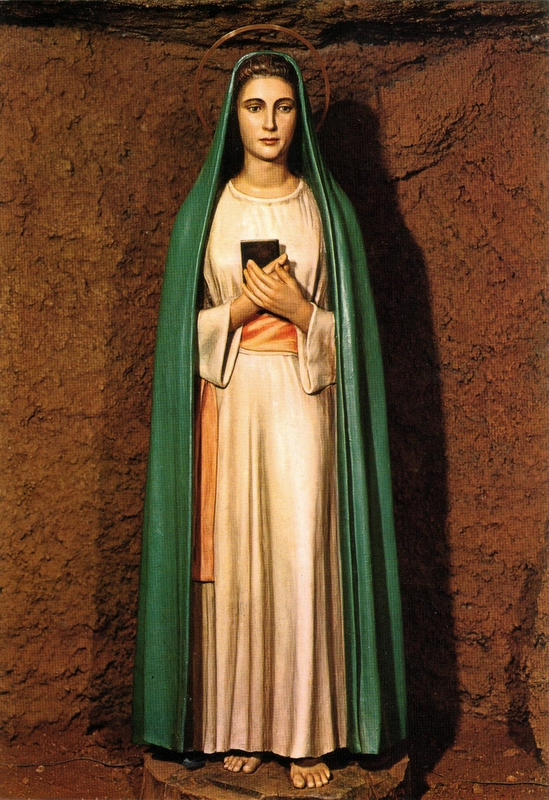

="A VIRGEM DA
REVELAÇÃO"=



"BONITA E ADMIRÁVEL APARIÇÃO DE NOSSA SENHORA NUMA GRUTA EM TRE FONTANA, ROMA, ITÁLIA, CONVERTENDO UM TERRÍVEL HEREGE ANTI-CATÓLICO, QUE ATÉ QUERIA MATAR OS PADRES"
=ÍNDICE=
 -
DERRADEIRAS PALAVRAS + CONVITE
-
DERRADEIRAS PALAVRAS + CONVITE